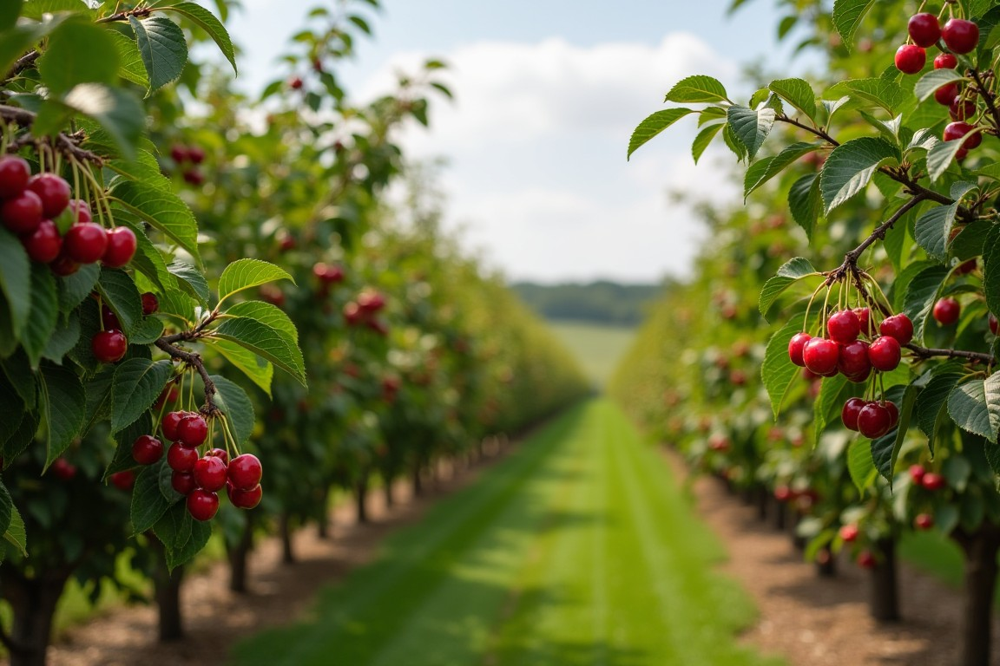
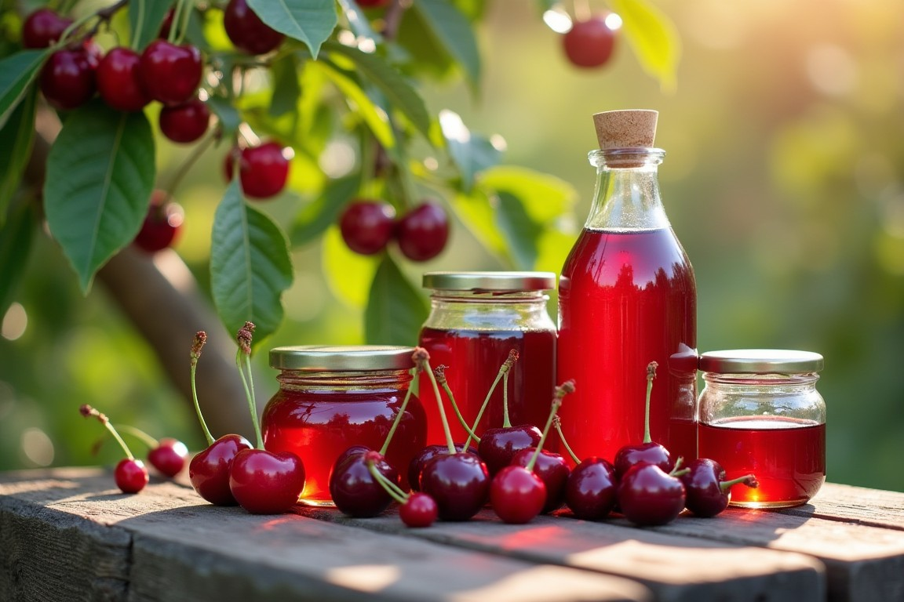

Leta 1900 je Sina Navić kupila zemljo v Borovnici in odkrila, da tukajšnja lega ponuja popolne pogoje za gojenje češenj. Njena hčerka Čeri Navić je nadaljevala družinsko tradicijo in začela pod imenom Čeri prodajati prve pridelke.
Njihov najbolj prepoznaven izdelek je postal češnjev liker, ki ga po isti recepturi pridelujemo še danes. Skozi generacije smo svojo ponudbo širili in danes ponujamo pestro izbiro kakovostnih izdelkov.

Ponujamo široko izbiro češnjevih likerjev, višnjevih likerjev, vse od 4% alkohola pa do 69% alkohola. Polek likerjev pridelujemo tudi vino in brezalkoholne sokove.
Naša ponudba vlkjučuje tudi kozmetične izdelke s češnjevim in višnjevim ekstraktom. Pečemo tudi češnjevo in višnjevo pecivo in kuhamo marmelade. Pri nas lahko kupite tudi češnje in višnje po zabojih.